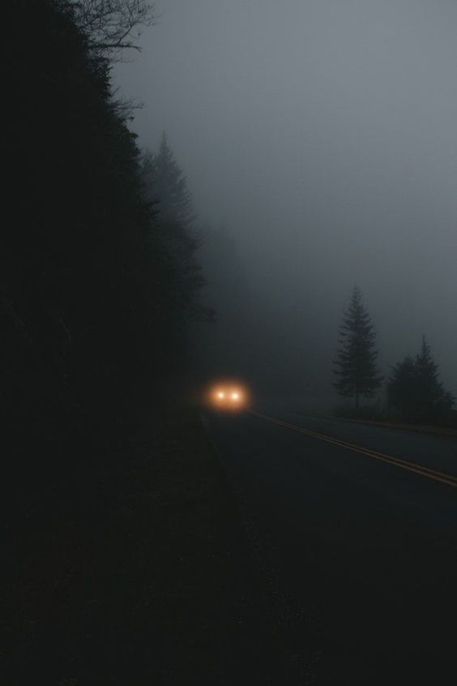

Und aus Nähe wird ein Geruch, wird eine Ahnung.
Aus der Wärme deiner Umarmung, die Kälte irgendeiner Stadt.
Aus dem Schweiß auf deiner Haut und deinem Atem,
Wird nicht mehr als was der Fotofilter am anderen Ende daraus macht.
Aus den Momenten werden Tage, wird ein Leben.
Aus der Stille wird ein Rauschen, wird ein schreien.
Und aus Wünschen werden Worte, werden Taten
und die Frage wo es von allem mal genug ist um zu bleiben
 Tag1